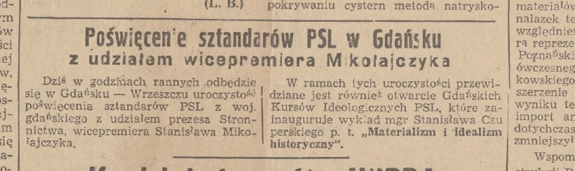
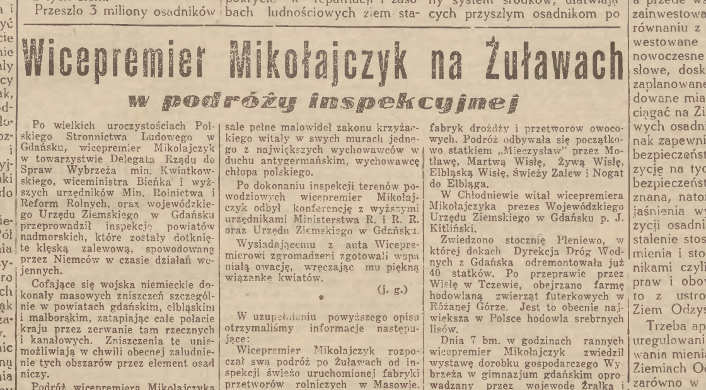
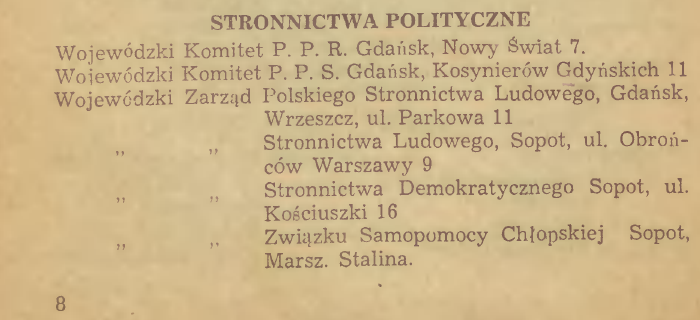

4 sierpnia 1946: wizyta Stanisława Mikołajczyka i uroczystości PSL we Wrzeszczu
Wielkie uroczystości ludowców w powojennym Gdańsku
Latem 1946 roku Gdańsk stał się miejscem publicznego wystąpienia Polskiego Stronnictwa Ludowego — największej w tym czasie legalnej siły opozycyjnej wobec umacniającej się władzy komunistycznej. Do Wrzeszcza przyjechał sam Stanisław Mikołajczyk, prezes PSL i wicepremier. Uroczystości poświęcenia sztandarów PSL w kościele Najświętszego Serca Jezusowego we Wrzeszczu towarzyszyły przemówienia i zgromadzenie przed siedzibą Wojewódzkiego Zarządu PSL. Mieściła się ona przy ul. Parkowej 11 (dziś ul. Bohaterów Getta Warszawskiego 11). Raport WUBP podaje, że po nabożeństwie Mikołajczyk pojechał tam samochodem.7
Uroczystość, która miała znaczenie polityczne
Poświęcenie partyjnych sztandarów nie było wówczas wyłącznie ceremonią religijną. Odbyło się ono minęło zaledwie pięć tygodni po referendum ludowego z 30 czerwca 1946 r. PSL nadal pozostawało masowym ruchem politycznym – ostatnim w Polsce legalnie działającym i niezależnym od komunistów. Mikołajczyk był nadzieją nie tylko chłopstwa, ale wszystkich którzy wierzyli, że demokrację uda się w Polsce ocalić. Jego obecność w Gdańsku i publiczne wystąpienie zwolenników Stronnictwa miały czytelny wymiar polityczny – PSL i dosłownie i w przenośni nie złożył sztandarów, a wprost przeciwnie – wznosi nowe. Mimo sfałszowania przez komunistów wyników referendum ludowego, nie Mikołajczyk nie zamierzał rezygnować z oporu wobec całkowitego wprowadzania sowieckich porządków.
Zapiski o wydarzeniu możemy odnaleźć zarówno w ówczesnej prasie, jak i współczesnych pamiętnikach osób zaangażowanych społeczenie w tamtym okresie.
O wydarzeniu wspomina w swoich pamiętnikach proboszcz parafii Najświętszego Serca Jezusowego, ksiądz Józef Zator-Przytocki (który przeprowadził ceremonie):
Kiedy w pierwszą niedzielę sierpnia 1946 r. było poświęcenie w tym kościele 12 sztandarów PSL-owych, z udziałem wicepremiera Mikołajczyka, znanego działacza ludowego Bagińskiego, dowódcy Batalionów Chłopskich pułk. Kamińskiego, prezesa Wojewódzkiego Koła PSL w Krakowie Mierzwy i innych.5
Prasa także dostrzegła i komentowała obecność Mikołajczyka w Gdańsku. „Dziennik Bałtycki” donosił:
„Poświęcenie sztandarów PSL w Gdańsku z udziałem wicepremiera Mikołajczyka”.2

Kilka dni później partyjna „Gazeta Ludowa” pisała już po fakcie o „wielkich uroczystościach Polskiego Stronnictwa Ludowego w Gdańsku”, po których Mikołajczyk udał się w podróż inspekcyjną po Żuławach.3

Wydarzenie nie uszło uwadze komunistycznej bezpiece. Materiały z wydarzenia znalazły się więc w dokumentacji aparatu bezpieczeństwa. W archiwum IPN zachowała się teczka dotycząca działalności i rozpracowania środowiska PSL w województwie gdańskim. Jej opis wymienia wprost „przemówienia na uroczystość poświęcenia sztandarów PSL w Gdańsku 04-08-1946 r.”1 Zachowały się w niej także telefonogram oraz raport specjalny WUBP w Gdańsku, oba z 6 sierpnia 1946 r., opisujące przebieg uroczystości.7
Parkowa 11 — adres gdańskiego PSL
Potwierdzenie faktu, ze siedziba PSL znajdowała się przy dzisiejszej ulicy Bohaterów Getta pochodzi z wydanego w 1946 r. Informatora miasta Gdańska. W dziale „Stronnictwa polityczne” zapisano:
„Wojewódzki Zarząd Polskiego Stronnictwa Ludowego, Gdańsk, Wrzeszcz, ul. Parkowa 11”.4

Adres potwierdza też raport WUBP sporządzony dwa dni po uroczystości: po nabożeństwie Mikołajczyk miał pojechać samochodem „do lokalu P.S.L.-u we Wrzeszczu przy ul. Parkowej 11”, gdzie czekało już około 300–400 osób. Jest to niezależne od informatora, współczesne wydarzeniu poświadczenie, że właśnie w tym lokalu odbyła się dalsza część uroczystości.7
Ten sam informator zestawia nazwę Parkowa z przedwojenną nazwą Rickertweg. Z kolei ul. Parkowa pod koniec lat 50. otrzymała nową nazwę Bohaterów Getta Warszawskiego, którą dumnie nosi do dziś6. Żydowscy powstańcy walczący mimo beznadziejnej sytuacji do końca z potężnym i nienawistnym reżimem to postacie do dziś inspirujące.
Co ciekawe na tej samej stronie informatora możemy przeczytać, że siedziba komunistów z PPR, czyli głównych przeciwników politycznych PSL i wykonawców obcych interesów w Polsce, znajdowała się w Domu Thorwalda na ul. Nowy Świat 7 (dziś Nowe Ogrody 7), w bezpośrednim sąsiedztwie (nieistniejącego jeszcze wówczas Urzędu Miejskiego). O ile informator się nie myli, pomiędzy ówczesnym gabinetem wojewódzkiego sekretarza PPR, a gabinetem Prezydent Aleksandry Dulkiewicz było nie więcej niż 60 metrów.
Meldunki z demonstracji na Parkowej 11 również trafiały na Nowy Świat (Nowe Ogrody), i to w dwa miejsca, bo naprzeciwko siedziby PPR znajdowała się druga ważna siedziba władz komunistycznych – siedziba Urzędu Bezpieczeństwa (Nowy Świat 27).
Zgromadzenie na ulicy Parkowej w raportach ubecji
Raport specjalny Wojewódzkiego Urzędu Bezpieczeństwa Publicznego (WUBP) nie jest bezstronną kroniką: został sporządzony przez aparat bezpieczeństwa, który wcześniej zakazał zgromadzenia na ulicy i użycia głośnika. Jest jednak źródłem z epoki, które szczegółowo opisuje zdarzenia niekorzystne dla ówczesnej władzy. Według jego autora Msza z poświęceniem sztandaru rozpoczęła się o godz. 10 w kościele parafialnym we Wrzeszczu przy ul. Czarnej, trwała do godz. 11.30 i zgromadziła około 2 tysięcy osób. Ocena WUBP, że około 60% obecnych przyszło „jak na normalne nabożeństwo”, jest oceną autora raportu, a nie ustaleniem niezależnego obserwatora.7
Po przyjeździe Mikołajczyka na Parkową 11 do lokalu wpuszczano osoby z zaproszeniami i legitymacjami PSL. WUBP oceniał, że w kulminacyjnym momencie na ulicy przed siedzibą znajdowało się około 3 tysięcy osób, a w samym lokalu około 300. W tej samej notatce oceniono uliczny tłum na około 500 członków PSL, podobną liczbę członków PPR i PPS, około 50 członków ZWM oraz pozostałych bezpartyjnych. To szacunki sporządzone przez WUBP, lecz potwierdzają skalę zgromadzenia przed Parkową 11.7
Raport odnotowuje też, że Mikołajczyk pojawił się na balkonie, lecz wobec gwizdów i okrzyków przeciwko niemu szybko się wycofał. W dalszej części wystąpił w lokalu; według raportu mówił m.in. o referendum z 30 czerwca, represjach wobec członków PSL i pozycji Urzędu Bezpieczeństwa. WUBP podał, że zatrzymano 20 osób w związku z bójkami i okrzykami antypaństwowymi, z czego 18 zwolniono następnego dnia. Dokument nie ustala ich przynależności partyjnej; stwierdza zarazem, że w lokalu PSL nikogo nie zatrzymano oraz że nie doszło do użycia broni ani prowokacji.7
Dlaczego warto pamiętać
Uroczystości 4 sierpnia 1946 r. to w zasadzie ostatni moment, w którym demokratyczna opozycja mogła jeszcze występować publicznie, gromadzić zwolenników, odwoływać się do własnych symboli i pójść z nimi do kościoła. Historia tego dnia łączy ogólnopolską politykę z konkretnym miejscem we Wrzeszczu. Adres dzisiejszej ul. Bohaterów Getta Warszawskiego 11 był w 1946 r. siedzibą Wojewódzkiego Zarządu PSL — lokalnym punktem demokratycznej opozycji skupionej wokół Stanisława Mikołajczyka.
Środowisko gdańskiego PSL było już obserwowane przez aparat bezpieczeństwa. W następnych struktury PSL poddawane były ostrym represjom, aresztowaniom oraz szykanom ze strony aparatów bezpieczeństwa, jednak specyfika regionu gdańskiego (silnie zmilitaryzowanego, ze słabszą tradycją klasowego ruchu ludowego niż np. Mazowsze czy Małopolska, gdzie dochodziło do najkrwawszych skrytobójczych mordów dokonywanych przez bezpiekę lub grupy typu bojówki Rypińskiego) sprawiała, że głównym narzędziem walki z opozycją na Pomorzu były masowe aresztowania, paraliżowanie struktur partyjnych, skazywanie w procesach politycznych oraz unieważnianie list wyborczych, a nie tak masowa eliminacja fizyczna działaczy szczebla regionalnego jak w centralnej Polsce. Kolejny rok, w którym miały si wybory parlamentarne zakończył działalność polityczną Mikołajczyka w kraju. W sytuacji gdy realnie zaczęło mu zagrażać więzienie, a nawet śmierć – musiał uciec z Polski. PSL i całą demokrację w Polsce ostatecznie zmiażdżył czerwony tramwaj komunizmu.
Źródła
- Inwentarz Archiwalny IPN, sygn.
IPN BU 00231/145 t. 43, sprawa obiektowa krypt. „Radykalni”, opis jednostki zawierającej m.in. przemówienia na uroczystość poświęcenia sztandarów PSL w Gdańsku 4 sierpnia 1946 r.: inwentarz.ipn.gov.pl/node/4188249. - „Dziennik Bałtycki”, 5 sierpnia 1946 r., s. 3, notka „Poświęcenie sztandarów PSL w Gdańsku z udziałem wicepremiera Mikołajczyka”: skan w Bałtyckiej Bibliotece Cyfrowej. Opis biblioteczny podaje nr 113, natomiast na skanie s. 3 widnieje nr 213.
- „Gazeta Ludowa”, R. 2, nr 217, 9 sierpnia 1946 r., artykuł „Wicepremier Mikołajczyk na Żuławach”, druk s. 6 / trzecia karta PDF: skan w Mazowieckiej Bibliotece Cyfrowej.
- M. Granke, M. Kuźniak, Informator miasta Gdańska, Gdańsk 1946, dział „Stronnictwa polityczne”, s. 8 druku / s. 10 PDF; spis ulic Wrzeszcza, s. 50 druku / s. 52 PDF: PDF w Bałtyckiej Bibliotece Cyfrowej.
- J. Zator-Przytocki, Pamiętniki z okresu lat 1939–1956, Księdza dr ppłk Józefa Zatora-Przytockiego żołnierza Armii Krajowej i więźnia politycznego PRL. Związek Więźniów Politycznych Okresu Stalinowskiego Oddział Wrocław, Wrocław 1999
- Zgromadzone źródła dokumentują ciąg nazw
Rickertweg→Parkowa→Bohaterów Getta Warszawskiegoi bardzo mocno wskazują na zachowanie numeru 11. Zob. Artur Jendrzejewski, „Ekspozytura Abwehry w międzywojennym Wolnym Mieście Gdańsku (1920–1939) – kadra, agentura, zadania”, Rocznik Gdański, t. 82, 2022, s. 22: PDF artykułu. Dokładnego aktu przemianowania i dokumentu katastralnego lub renumeracyjnego nie odnaleziono. - Wojewódzki Urząd Bezpieczeństwa Publicznego w Gdańsku, „Telefonogram”, 6 sierpnia 1946 r., karta 0123, oraz „Raport specjalny. Sprawozdanie z uroczystości poświęcenia sztandaru P.S.L. dnia 4.VIII.46 r.”, 6 sierpnia 1946 r., karty 0124–0126;
IPN BU 00231/145 t. 43, sprawa obiektowa krypt. „Radykalni”. - Główne zdjęcie jest ilustracyjne, wygenerowane przez sztuczną inteligencję.